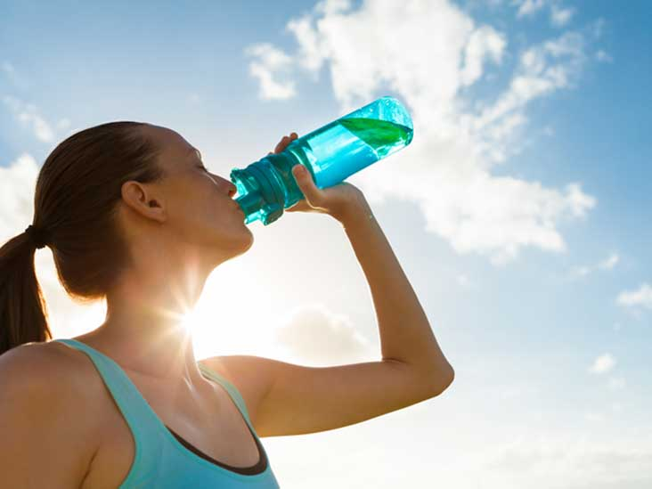

Water: How much should you drink every day?
Water is essential to good health, yet needs vary by individual. These guidelines can help ensure you drink enough fluids.
How much water should you drink each day? It's a simple question with no easy answer.
Studies have produced varying recommendations over the years. But your individual water needs depend on many factors, including your health, how active you are and where you live.
No single formula fits everyone. But knowing more about your body's need for fluids will help you estimate how much water to drink each day.
Health benefits of water
Water is your body's principal chemical component and makes up about 60 percent of your body weight. Your body depends on water to survive.
Every cell, tissue and organ in your body needs water to work properly. For example, water:
- Gets rid of wastes through urination, perspiration and bowel movements
- Keeps your temperature normal
- Lubricates and cushions joints
- Protects sensitive tissues
Lack of water can lead to dehydration — a condition that occurs when you don't have enough water in your body to carry out normal functions. Even mild dehydration can drain your energy and make you tired.
How much water do you need?
Every day you lose water through your breath, perspiration, urine and bowel movements. For your body to function properly, you must replenish its water supply by consuming beverages and foods that contain water.
So how much fluid does the average, healthy adult living in a temperate climate need? The National Academies of Sciences, Engineering, and Medicine determined that an adequate daily fluid intake is:
- About 15.5 cups (3.7 liters) of fluids for men
- About 11.5 cups (2.7 liters) of fluids a day for women
These recommendations cover fluids from water, other beverages and food. About 20 percent of daily fluid intake usually comes from food and the rest from drinks.
What about the advice to drink 8 glasses a day?
You've probably heard the advice, "Drink eight 8-ounce glasses of water a day." That's easy to remember, and it's a reasonable goal.
Most healthy people can stay hydrated by drinking water and other fluids whenever they feel thirsty. For some people, fewer than eight glasses a day might be enough. But other people might need more.